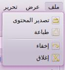
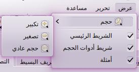
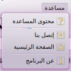
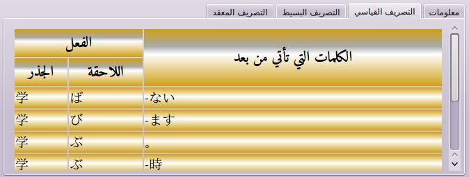
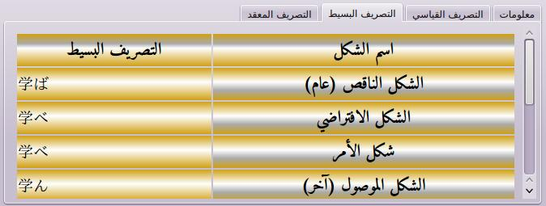
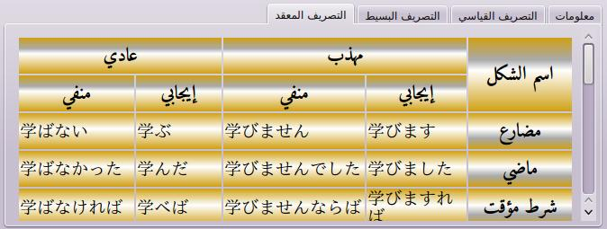

هذا التطبيق يتيح لك واجهة مستخدم سهلة الاستعمال. الواجهة مصممة لمساعدة المستخدم على تصريف الأفعال اليابانية والقيام بأمور أخرى بطريقة سهلة. واجهة التطبيق يمكن تقسيمها إلى خمسة أجزاء:
إضافة إلى ذلك، واجهة المستخدم مترجمة إلى لغات أخرى غير العربية: الإنكليزية والفرنسية واليابانية.
تحتوي هذه القائمة على الوظائف الخاصة بالبيانات مثل الطباعة أو تصدير جداول الناتجة.

تحتوي هذه القائمة على وظائف التحرير، كالتفضيلات.
تحتوي هذه القائمة على الوظائف الخاصة بالمظهر كحجم الخط، القوائم المتاحة.

تحتوي هذه القائمة على هذه المساعدة ومعلومات حول البرنامج.

أشرطة الأدوات تستعمل لتسهيل الوصول إلى الوظائف الموجودة على مستوى شريط القوائم.
هنا يمكنك إدخال الفعل الياباني الذي تريد تصريفه. الفعل المدخل يجب أن تتحقق فيه بعض الشروط:
النتيجة تحتوي على ثلاثة جداول:
التطبيق يعطيك معلومات حول الفعل المدخل.
إن لم يكن الفعل متوفرا في قاعدة البيانات، ستظهر لك رسالة تخبرك بذلك.
خلاف ذلك، سيظهر لك نوع الفعل.
هذه قائمة لأهم أنواع الفعل:
يستعمل لتعلم تصريف الأفعال اليابانية.

يعطينا جذوع الفعل: a e u i o و t-form.

يعطينا بعضا من التصاريف المعقدة، التي يمكن الحصول عليها من التصاريف البسيطة مضاف إليها بعض اللواحق.
